Local Transcribe transcribes video and audio entirely on your own Mac. Speech recognition is Whisper large-v3 (via MLX), and a separate speaker detection model labels who is talking. Every transcript has word timings and speakers.
You can use it in two ways, separately or together:
clip.transcript.json. A watch folder picks up new files by itself.On the first job the app downloads the Whisper model once (about 3 GB). After that everything runs locally. The app only connects to Hugging Face once for the model, to GitHub to check for a newer version, and to Iconik when you use it. No usage data is sent anywhere.
When a new version is available, a notice appears at the top of the window. For most updates you click Install: the app downloads the update, checks its signature, waits until no job is running and restarts itself. For a larger update the notice links to the download page instead. Install the new dmg the same way as the first time.
A new job replaces the transcript this app made earlier. Transcripts from other sources, files the app did not write and corrections made in Refine are never overwritten. A run that finds no intelligible speech keeps the earlier transcript.
Open the installer (dmg). Next to the app are a shortcut to Applications and the guides (Dutch and English). Drag Local Transcribe to Applications.
First launch. Open the app from Applications. macOS says Apple could not verify that the app is free of malware, because the app is not signed yet. Click Done, not Move to Trash.
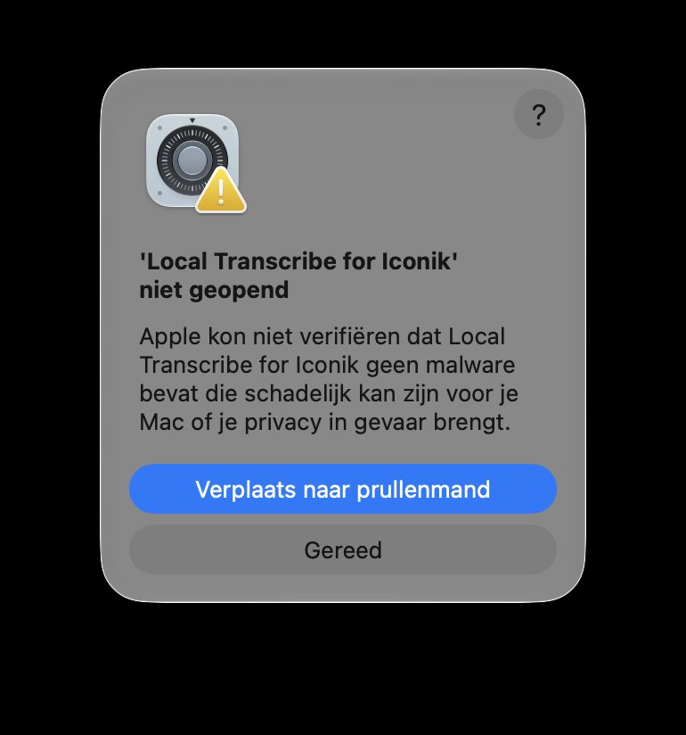
Go to System Settings, Privacy & Security and scroll down to Security. Next to the notice that Local Transcribe was blocked, click Open Anyway.
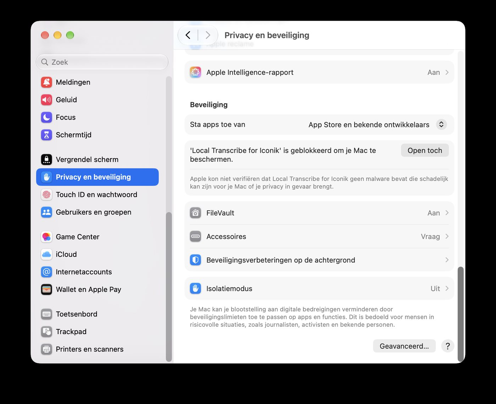
Another prompt appears. Choose Open Anyway and confirm with your password or Touch ID if asked. You only need to do this once per Mac.

Coming from Local Transcribe for Iconik (the name up to 0.7)? The old app stays in Applications next to the new one. At the first start the new app asks whether the old one may go to the Trash. Your settings, your Iconik login, transcripts and corrections stay: they are kept apart from the app. macOS may ask for your keychain password once: choose Always Allow. With Allow it asks twice.
The empty window shows where to drop files. Drag one or more video or audio files onto the window, or click Choose files…. While you drag, a blue area says the app is ready to take them.
The first time, the app downloads the Whisper model (about 3 GB). The window shows a notice while it does. This can take from a few minutes to longer: the model comes from Hugging Face, and downloads without an account are slower there. The progress bar can stay at 0% for a long while while the download is still running. Leave the app running. Once the model is in, the transcription starts by itself.

For each finished job you see the number of lines, the number of speakers, the detected language and how fast it ran. Below the title are the audio tracks of the file. The app picks the tracks with speech by itself. A track that carries the same signal as another track is ignored, and it says so next to it.

When you quit the app with Cmd+Q while a job is running, it asks what to do. After this job finishes the running job, picks up nothing new and then quits by itself. Quit anyway stops the job; you can start it again later.
clip.mov gets clip.transcript.json next to it. Under Settings › Files (the gear at the top right, or Cmd+,) you can choose In one folder… instead: all transcripts then go to a folder you pick, with the same folder structure as the source, so two files called clip.mov do not clash. When clip.mov and clip.wav sit side by side, the second gets clip.wav.transcript.json.

The app knows a file by a fingerprint of its content, not by its name or folder. A copy, a moved file or a renamed one gets the transcript the Mac already has, without transcribing again. A clip.transcript.json that the app did not write, or that belongs to another file, is left alone and the job is skipped.
The format of the file is described in docs/format on the project page, so other programs can read it.
Drop a folder on the window and it shows as a group in the list, with all video and audio in it and its subfolders. Audio-only files are included too; turn that off under Settings › Files, Audio only too. The group shows the first five files; show all shows the rest, and the arrow folds the group.
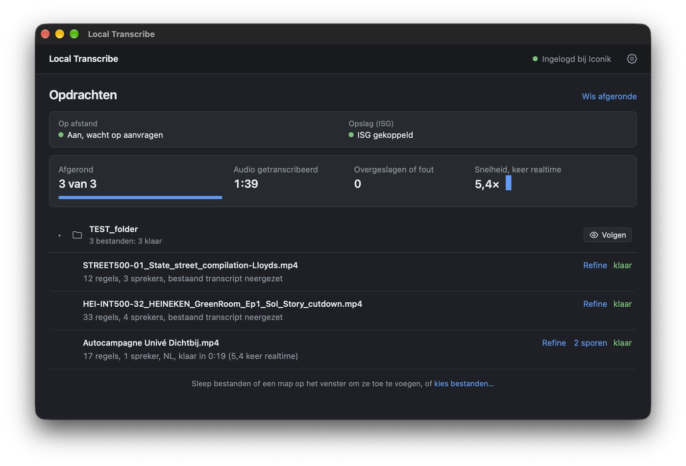
Click Watch folder on a group, or + under Settings › Files, Watch folders. The app then picks up new files in that folder by itself:
On a read-only disk, a locked card or a folder without permission, the app says so before it starts. The group (or the file) shows the reason, with Choose another place… and Cancel.
Pick a folder. The transcripts go there, in a folder with the name of the card or watch folder and the same subfolders. The choice is remembered for that watch folder or disk; Settings › Files, Other places lists them, and Forget makes the app ask again next time. When writing fails during a job, the transcript is kept on the Mac and written once you pick a place, without transcribing again.
Select a finished job and press ⌫, or click ✕, to take it out of the list. Right-click gives two choices: Remove from list, and Also remove from this Mac…, which removes what the app keeps about the file on this Mac (its copy of the transcript, waveforms, drafts and originals of Refine). The window also offers to clear the log, which holds file names.
For a local file the window has one more choice, off by default: Also the transcript next to the media. It moves clip.transcript.json and the subtitle files to the Trash, only when the app wrote them itself and nobody changed them since. The media file always stays.

A network share often has no Trash. The file then stays and the app says so, with Delete anyway…. That deletes it for good, after a second confirmation, and only what the app wrote and nobody changed. Everything in Iconik stays, also when the file is on Iconik's storage.
Refine lets you check a transcript next to the original. The video plays on the left, the text blocks are on the right, and below is a timeline with the text blocks, the speakers and every audio track as a waveform. Open it with Refine on a finished job.
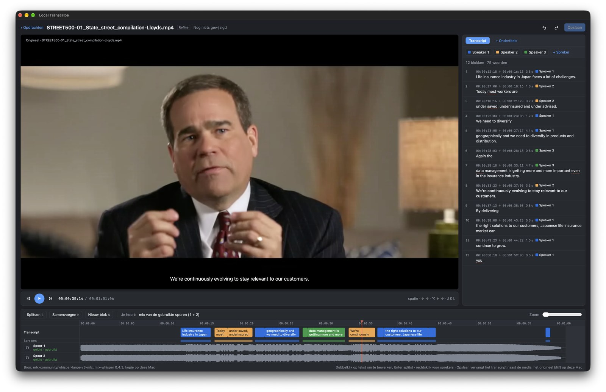
The original plays straight from the file. Click a block or the timeline to jump there. Space plays and pauses, the arrow keys jump a second (five with Shift), Option with an arrow jumps a block, and J, K and L work as in an editing program. The headphone button on a track plays only that track; by default you hear the mix of the tracks the app used.
Every change is kept as a draft on this Mac right away. You can leave Refine and carry on later; undo and redo with Cmd+Z and Shift+Cmd+Z. The job list then shows Draft.
Save writes the correction next to the media, in place of the transcript. The original stays on this Mac, and Put original back restores it. The job list then shows Refined. Under Settings › Transcription, at Refine, you see how many originals are kept and can remove them; after that no original can be put back.
A new transcription skips a corrected file and says why. To transcribe it again, put the original back in Refine first.
A transcript block is as long as someone talks. A subtitle has to be readable: two short lines, long enough on screen. The app makes subtitles from the transcript as a second layer and saves them as a file. The transcript itself does not change. Subtitles are only made when you ask for them: in Refine, or with the setting at the end of this chapter.
Click + Subtitles next to the Transcript tab. The window that opens has three parts:
The line at the bottom counts what you will get: how many subtitles, how many are fast and how many unreadable, and what that would be without lingering. The text is never shortened, so fast speech stays a warning. Click Make and save.
If an .srt or .vtt is already next to the media, the window offers to load it instead (Load), and you can load any other file as well. The subtitles come in as they are in the file; speakers and word timing come from the transcript where the text matches.
After making, the Subtitles tab is open and the subtitles have their own lane on the timeline, above the transcript. Everything from Refine works on the tab you are in: typing, splitting, merging, dragging the edges, undo and redo. Under the video you see the subtitle as it will be in the file.
When you change the transcript afterwards, the subtitles stay as they are and say that the transcript changed. Make them again if you want the changes in.
The app does not overwrite a subtitle file it did not write itself, or one that someone changed afterwards. Load that file, or save in another place. In the job list a finished job with subtitles shows Subtitles; click it to open them.
Under Settings › Files, Subtitles, turn on Make subtitles with every transcription (off by default, for local files). Then choose:
The subtitles are made right after the transcript. They are the same subtitles Refine shows, so you can check and correct them there. Once you change them in Refine, a new transcription leaves them alone. The job list says how many have a warning, for example "subtitles, 3 with a warning".
Open Settings with the gear at the top right of the window, with Cmd+, or from the menu bar icon. Changes apply at once.
Everything in this part is only needed when you use Iconik. With Iconik the app writes its transcripts back to Iconik as native transcriptions, with speakers and word timing, and you start jobs with buttons in Iconik. The file is read from the Iconik storage (ISG) mounted on your Mac; nothing is downloaded from Iconik.
Steps 1 and 4 are done once, by an Iconik admin, for all users together. Colleagues skip those, see Connecting colleagues.
An Iconik admin does this. You create one application that the app is allowed to log in with.
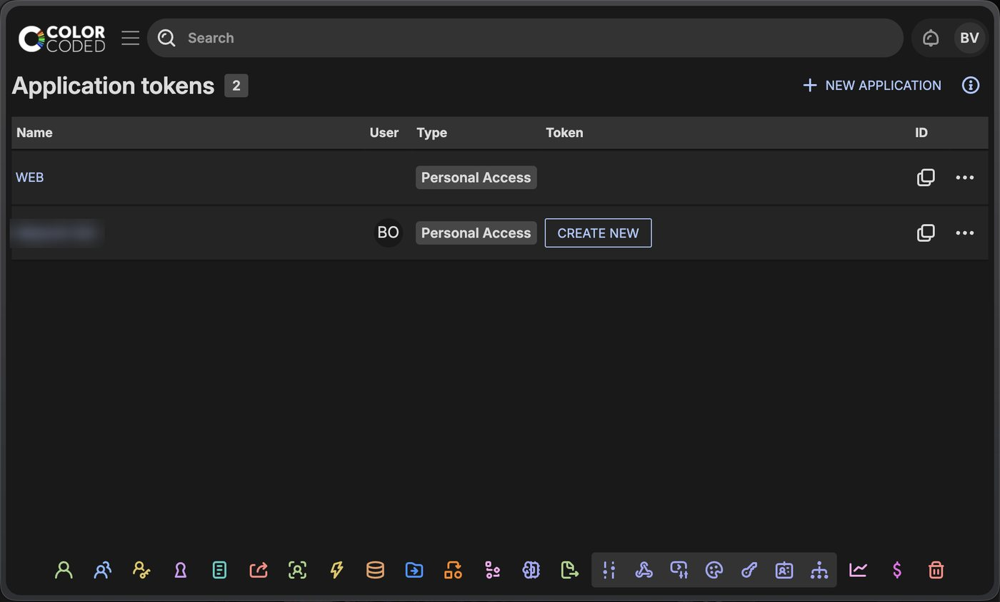

| Field | Value |
|---|---|
| Name | Local Transcribe |
| Redirect URIs | http://localhost:8765/oauth/callback |
| Allowed origins | leave empty |
| Scopes | assets:read, assets:write, collections:read, user_impersonation |

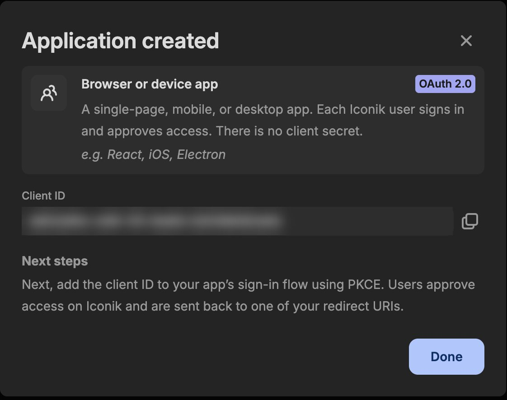
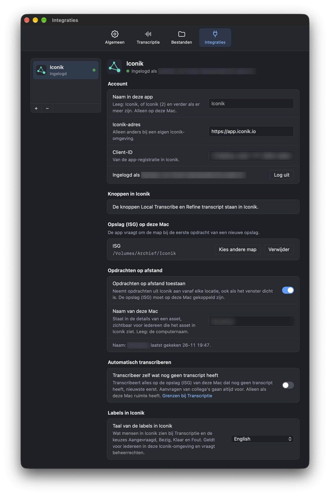
The window shows the Iconik sign-in page. Enter your email address and sign in as you normally do.
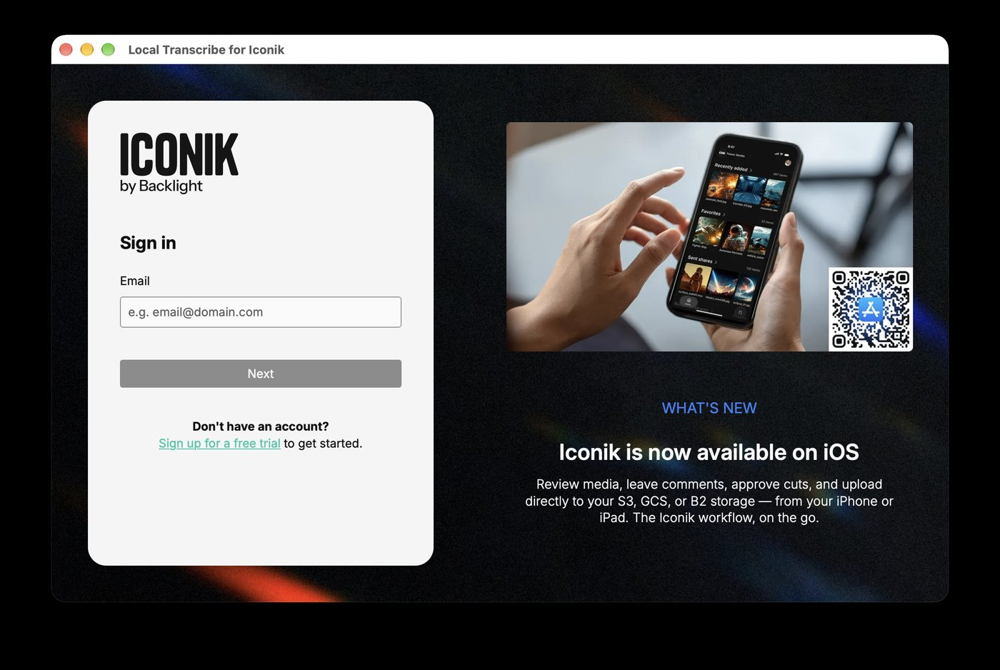
Iconik then asks whether Local Transcribe may have access. Check that it is Local Transcribe asking and click Allow access. Settings then says Logged in as with your name.

The app keeps your login in the macOS keychain. After you install a new version, macOS asks for your keychain password when the app starts: choose Always Allow.
After logging in the app checks whether the Local Transcribe and Refine transcript buttons already exist in this Iconik environment. If not, Settings › Integrations says so at Buttons in Iconik, and a yellow notice appears in the job window. Click Add the buttons to Iconik. This is needed only once, for all users at the same time, and requires the right to create Custom Actions.
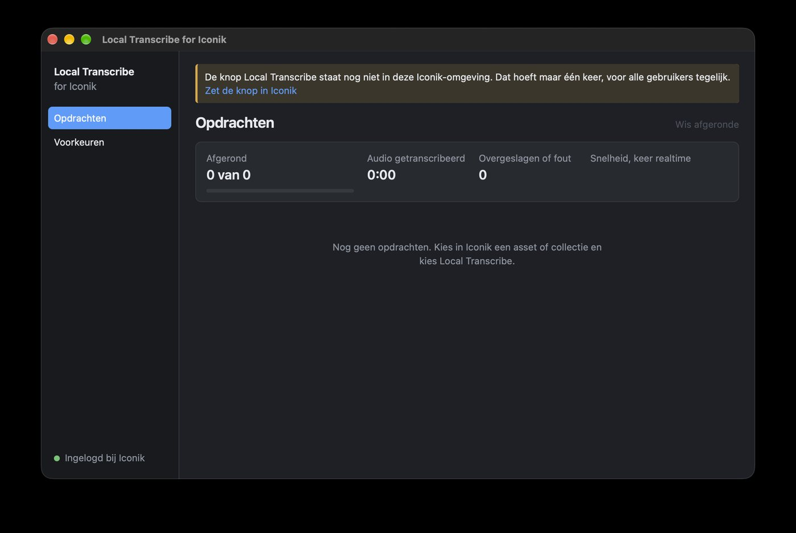
Then pick an asset or collection in Iconik. An asset without a transcript looks like this; the Transcribe button in this panel is Iconik's own, not this app's.
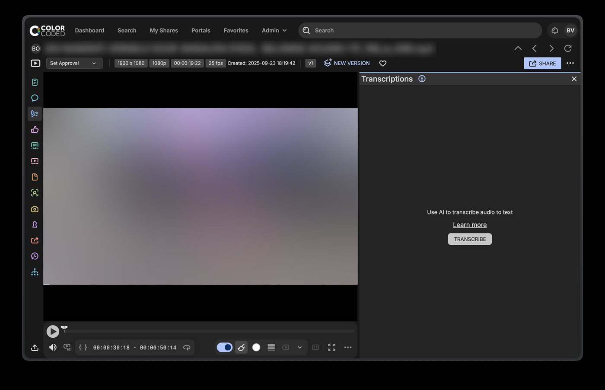
Open the menu with the three dots at the top right and choose Local Transcribe. The job runs on the computer where you click; progress shows in the app's job list.
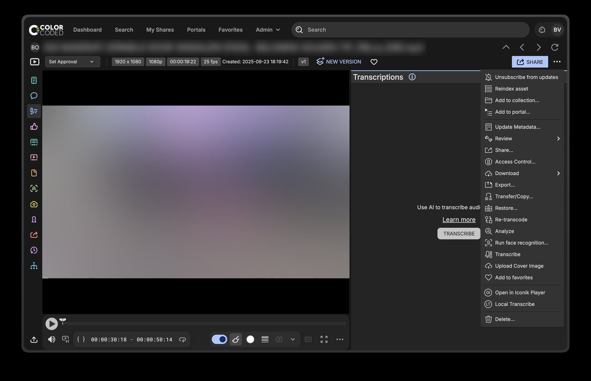
The app checks again every minute whether the buttons are still there. If they are removed from Iconik, the notice returns by itself.
Iconik knows for each asset which storage (ISG) the file is on and in which folder. The app needs to know where that storage is mounted on this Mac. You do not set this up in advance: it happens on the first job from a storage, and is remembered afterwards.

If the archive is not mounted, the job stops with a message that the folder cannot be reached. Mount the archive and start the job again. If an asset has more than one media file, the app uses the first one.
The transcript appears on the asset under Transcriptions, with the speakers and the language. Rows from Iconik in the job list carry an Iconik label when the list also holds local files.
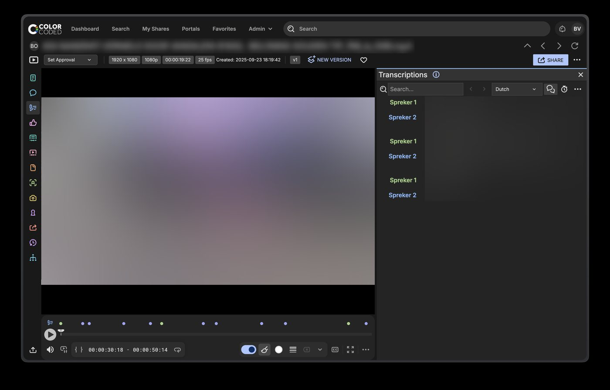
A colleague does not need steps 1 and 4, because those apply to the whole Iconik environment. For a colleague it is:
The Client ID is not a secret in the sense of a password (there is no client secret), but only share it with people inside your own organisation. Everyone logs in with their own account and transcribes on their own Mac.
Several Iconik environments. + under Integrations adds another one, each with its own Client ID, login, name and storage. A second link to an environment that is already linked is refused. Several environments have not been tested with real, separate environments yet.

Optional. With Allow remote jobs turned on under Settings › Integrations, a Mac picks up transcription requests made in Iconik, from any location, and processes them in the background. The Local Transcribe button keeps working as before. With remote jobs on, the app lives in the menu bar and closing the window hides it. The archive must be mounted on that Mac.
In the asset's metadata, set Transcription to Requested. The two fields (Transcription and Transcription details) are part of the metadata view Local Transcribe. Add them to a view your team already uses if you want them there.
Open the collection, select the assets (or select the collection itself), right-click and choose Update Metadata. Tick Transcription, choose Requested and click Update. Only ticked fields are changed. Every asset in the selection gets the request.
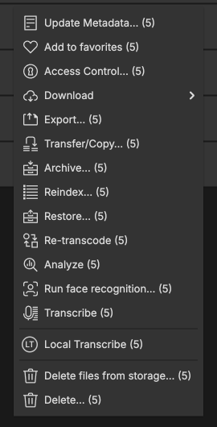

| Transcription | Meaning |
|---|---|
| Requested | Waiting for a Mac to pick it up |
| In progress | A Mac is working on it. The details field shows which Mac, since when, and the last sign of life |
| Done | The transcript is on the asset under Transcriptions. An asset without audio or without speech is also Done, with "Skipped:" and the reason in the details field |
| Failed | The reason is in the details field. Set it to Requested again to retry |
Macs share the queue without double work. A working Mac refreshes a last sign every minute. If it stays silent for four minutes, for example because it went to sleep or lost the archive, another Mac takes the asset over. A job that makes no progress for fifteen minutes is handed back by the app itself and the app restarts. After three attempts an asset goes to Failed with the reason.
A Mac with a problem of its own (archive not mounted, not signed in) pauses for ten minutes. Settings and the menu bar say why. Resume now lifts the pause straight away.
The details field names the Mac that did the work, for everyone who sees the asset. By default that is the computer name, which often holds a person's name; Name under Remote jobs sets another one.
The labels you see in Iconik (Requested, In progress, Done, Failed) depend on the language of the Iconik environment. The values behind them are always English. An admin can choose the language under Settings › Integrations, Labels in Iconik. It applies to everyone in that environment.
Tested with two Macs on one Iconik account. More Macs and separate Iconik accounts are not tested yet.
Optional, and only with Allow remote jobs on. Turn on Transcribe what has no transcript yet by itself, and the Mac works through everything on its linked storage (ISG) that has no transcript yet and no transcription status. Nobody needs to request anything.
[auto] in the Transcription details field in Iconik.| What you see | What is going on | What to do |
|---|---|---|
| A group or file says it cannot write here | The disk is read-only, the card is locked, or you have no permission for the folder | Click Choose another place…, or fix the permission and add the files again |
| Skipped: clip.transcript.json is already there and does not come from this app | A clip.transcript.json from another program, or for another file | Nothing, or move that file away and add the media again |
| A watch folder picks up nothing | The Mac has no room right now, the file is still changing, or the folder is not reachable | The status strip says what it waits for. Files are picked up 15 seconds after they stop changing |
| Iconik: not connected yet | No Client ID entered yet | Part 2, step 2 |
| Iconik: not logged in | You are logged out | Click Log in to Iconik under Settings › Integrations. Check the Client ID if it does not work |
| Iconik says the app is not configured as an OAuth2 client | The Client ID is wrong or incomplete | Check the ID from step 1 and enter it again |
| Yellow notice that the buttons are missing | The buttons are not in Iconik yet, or were removed | Click Add the buttons to Iconik. If that is refused, ask an Iconik admin to log in to this app once and add them |
| The folder cannot be reached, is the storage mounted? | The archive is not on this Mac | Mount the archive and start the job again |
| File not found | The chosen folder does not fit the asset | Choose another folder under Settings › Integrations, Storage (ISG) on this Mac |
| An asset stays on Requested | No Mac with Allow remote jobs on is running, every Mac is busy, or the Macs that are on are paused | Check that a Mac with remote jobs on is running and logged in, with the archive mounted. A request waits for running jobs, including automatic ones |
| A Mac says it is paused | It ran into a problem of its own, for example the archive was not mounted | Fix the cause named in Settings or the menu bar and click Resume now. Otherwise the pause ends by itself after ten minutes |
| Yellow bar or message: storage (ISG) not reachable | The storage is not connected to this Mac, for example after a restart or because the archive is switched off | Connect the storage again, for example in the Finder. The app carries on by itself. To connect a network share at every login, add it under System Settings > General > Login Items |
| Skipped: no audio or video on this asset | The asset only holds images, fonts, documents or a project file | Nothing. The asset gets the status Done with this note, so it is not picked up again |
| Auto transcribe or a watch folder says Waiting | The Mac has no room right now: on battery, not enough memory free, CPU or GPU too busy | Nothing, it starts by itself once there is room. Right after switching on it measures for about a minute first |
The screenshots show the Dutch version of the app. In English the labels read as in this text.